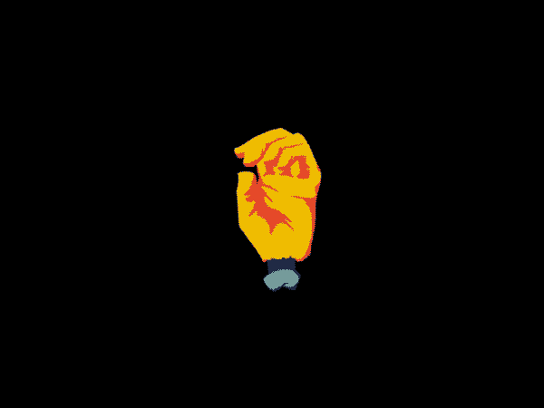

Lab 11:Advance Block Level Styling

Big Idea
The idea of this lab is to continue working with a partner and experiment about styling block elements and adding them to our css stylesheet.
Challenge
There was no challenge, it was more like an exploring lab and learning more about styling block elements.
Problems
I didn't had any problems, it was a fun lab in general.
Results
Here are the results, enjoy!